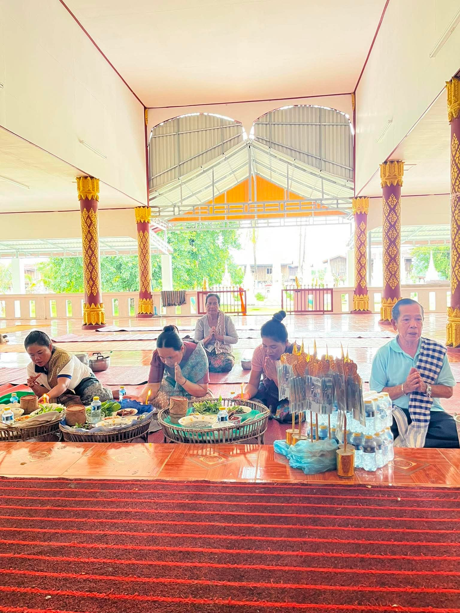
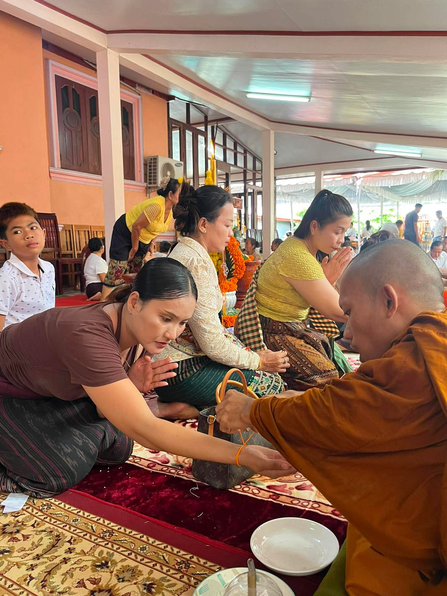

ຄັງຮູບພາບກິດຈະກຳ & ງານບຸນ
ປະມວນພາບຄວາມປະທັບໃຈ ແລະ ງານບຸນປະເພນີ ວັດເຊກະໝານກາງ

ງານບຸນ ອີເວັ້ນ 1
ຮູບພາບກິດຈະກຳ ແລະ ບັນຍາກາດງານບຸນ ອີເວັ້ນ 1 ວັດເຊກະໝານກາງ

ງານບຸນ ອີເວັ້ນ 2
ບັນຍາກາດຄວາມສັດທາ ແລະ ກິດຈະກຳທາງສາສະໜາ

ງານບຸນ ອີເວັ້ນ 3
ພາບການຮ່ວມສູດມົນ ແລະ ປະຕິບັດທຳຂອງຊາວບ້ານ